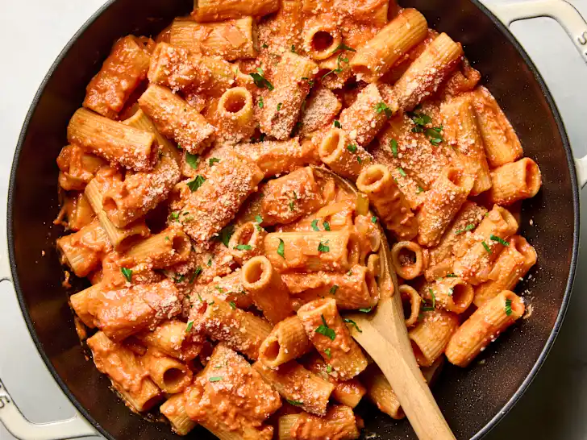

Tomato pasta recipe

There's a common theme to the pasta recipes you'll find on repeat in my weeknight dinner rotation:
They all require a minimal amount of effort, call for no more than a handful of basic ingredients,
and involve mostly hands-off cooking. But they still result in a totally comforting dinner that my whole family devours.
With that in mind, this creamy tomato rigatoni pasta dish is going to leave you feeling like a total dinner rockstar.
In about 30 minutes, you'll have a pot of perfectly cooked pasta with the most incredible homemade creamy tomato sauce.
Even on the nights I feel like I just can't with dinner, this is still totally doable because the sauce comes together
with canned tomatoes, cream, pasta water, and mostly hands-off cooking.
Ingedients
- 3 tablespoons unsalted butter
- 1 small yellow onion, diced (about 1 cup)
- 3 cloves garlic, minced
- 1 1/2 teaspoons kosher salt, plus more for the pasta water
- 1/4 teaspoon freshly ground black pepper
- 1/4 teaspoon red pepper flakes (optional)
- 1 (28-ounce) can crushed tomatoes
- 1 pound dried rigatoni pasta
- 1/2 cup heavy cream
- Grated Parmesan cheese, for garnish (optional)
- Chopped fresh parsley leaves, for garnish (optional)
Steps
- Melt 3 tablespoons unsalted butter in a Dutch oven or large pot over medium heat. Add 1 small diced yellow onion
and cook, stirring occasionally, until softened, 3 to 5 minutes. Stir in 3 minced garlic cloves, 1 1/2 teaspoons
kosher salt, 1/4 teaspoon black pepper, and 1/4 teaspoon red pepper flakes if using. Cook until fragrant, about 30 seconds.
- Stir in 1 (28-ounce) can crushed tomatoes and bring to a simmer. Reduce the heat to maintain a gentle simmer and cook,
stirring occasionally, until the flavors meld, about 20 minutes. Meanwhile, cook the pasta.
- Bring a large pot of salted water to a boil. Add 1 pound dried rigatoni pasta and cook 1 minute less than the package
instructions for al dente. Reserve 1/2 cup of the pasta water. Drain the rigatoni.
- Return the sauce to medium heat. Stir in 1/2 cup heavy cream and the reserved pasta water and bring to a simmer.
Gently stir in the pasta until well-coated. Garnish with Parmesan cheese and chopped parsley leaves if desired.
Home page